1.1.1. Основные термины и понятия, используемые в криптографии, модели открытого текста
1.1.1. Основные термины и понятия, используемые в криптографии, модели открытого текста
Центральным понятием в криптографии является алгоритм шифрования. Рассмотрим классическое определение алгоритма шифрования с секретным ключом.
Определение 1.1
Тройка алгоритмов, пространство сообщений 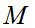 и пространство ключей  называется схемой шифрования с секретным ключом если:
называется схемой шифрования с секретным ключом если:
− алгоритм генерации ключей 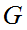 является рандомизированым (осуществляющим случайный выбор из множества инвариантов) алгоритмом, возвращающим ключ 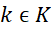;
− алгоритм шифрования 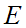 использует ключ  и открытое сообщение 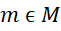 для получения шифртекста с;
и открытое сообщение 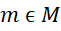 для получения шифртекста с;
− алгоритм расшифрования 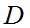 использует ключ  и шифртекст 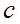 для получения открытого текста т;
и шифртекст 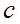 для получения открытого текста т;
− выполняется следующее равенство  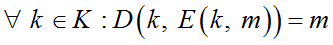.
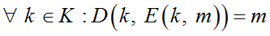.
Классической задачей криптографии является задача защищенного обмена сообщениями между абонентами с использованием открытого канала связи, который прослушивается злоумышленником (рис. 1.1). На данном рисунке: P − это открытый текст, C – шифртекст, E – операция зашифрования, D – операция расшифрования.
В качестве информации, подлежащей криптографическому преобразованию, рассматриваются открытые тексты, построенные с использованием некоторого алфавита.
Определение 1.2
Криптология − это наука о математических методах защиты информации с помощью преобразования с использованием специальных математических алгоритмов. Криптология состоит из криптографии и криптоанализа.
Определение 1.3
Криптография − это наука, которая изучает методы преобразования информации, обеспечивающие ее конфиденциальность, целостность и аутентичность.
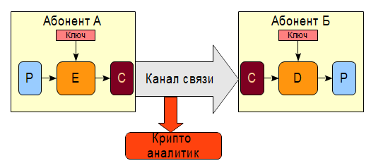
Рис. 1.1. Основная задача криптографии − передача зашифрованных конфиденциальных данных
с использованием открытого канала связи
Определение 1.4
Криптоанализ объединяет математические методы нарушения конфиденциальности и аутентичности информации без знания секретного ключа.
Определение 1.5
Конфиденциальность − это защищенность информации от ознакомления с ней лиц, не имеющих соответствующего права допуска с использование криптографических алгоритмов.
Определение 1.6
Целостность − невозможность несанкционированного изменения информации так, чтобы это не было обнаружено.
Определение 1.7
Аутентификация − это процесс установления подлинности сторон, обменивающихся сообщениями.
Определение 1.8
Зашифрование − процесс преобразования открытых данных в зашифрованные, при помощи алгоритма шифрования.
Определение 1.9
Расшифрование − процесс преобразования шифртекста данных в отрытый текст с использованием ключа.
Определение 1.10
Ключ − конкретное значение параметров криптографического алгоритма, обеспечивающее выбор одного преобразования из их семейства. Криптографический алгоритм должен обеспечивать невозможность восстановления открытого текста без знания ключа.
Пространство ключей − множество всех возможных значений ключа.
Определение 1.11
Авторизация − это предоставление определенному лицу прав на выполнение определенных действий; а также процесс проверки (подтверждения) данных прав при попытке выполнения этих действий.
Определение 1.12
Пароль − это условное слово или набор знаков, предназначенный для выполнения аутентификации или авторизации. Пароль можно преобразовать в ключ с использованием хэш-функций.
Определение 1.13
Система управления ключами − определяет порядок генерации новых ключей, использования ключей, хранения ключей, смены устаревших и скомпрометированных ключей, порядок уничтожения ключей.
Определение 1.14
Криптографическая атака − это попытка криптоаналитика нарушить конфиденциальность, аутентичность или целостность информации. Успешную криптографическую атаку называют взломом.
Определение 1.15
Криптографическая стойкость − это способность криптографического алгоритма противостоять криптографическим атакам.
Определение 1.16
Алфавит – это конечное множество знаков, используемых для кодирования информации. Главной характеристикой алфавита является его мощность – количество символов, составляющих алфавит.
Алфавит играет важную роль в трех аспектах криптографии:
− в задачах криптоанализа исторических шифров знание алфавита открытых текстов дает возможность применить частотный метод криптоанализа;
− для анализа криптостойкости паролей;
− для построения моделей открытого текста.
Большое значение имеет алфавит при рассмотрении стойкости паролей. Символы пароля, в отличие от ключа, неравновероятны и зависят от используемого языка и алфавита сообщения.
Рассмотрим задачу определения стойкости к перебору пароля пользователя. Предположим, что злоумышленнику известен алфавит, с использованием которого создан пароль. Формула для определения максимального количества паролей (пространства паролей) длины п с использованием алфавита мощности 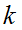 имеет вид 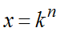. Например, для пароля длины 10 заданного с использованием строчных букв английского алфавита пространство паролей составит 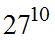 или 205891132094649 вариантов. Размер пространства паролей сложно оценить непосредственно, число 205891132094649 – это много или мало? В этом случае можно воспользоваться простым подходом – определить, сколько равновероятных бит ключа составляют это пространство. Для этого необходимо найти логарифм по основанию 2 от пространства паролей: 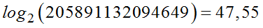 бит. То есть рассмотренный ранее пароль соответствует ключу размером примерно 47 бит. Неплохо для форума о домашних животных, но недостаточно для важной информации, так как сегодня возможно перебрать ключ длиной примерно 80 бит. Как увеличить стойкость пароля? Это можно сделать двумя способами – или увеличить длину пароля, или увеличить размер алфавита путем добавления в пароль прописных букв, цифр и, возможно, спецсимволов. Рекомендуется использовать сразу оба подхода одновременно – и пароли длиной не менее 12 символов, и строчные/прописные буквы, цифры и спецсимволы в составе пароля.
Необходимо отметить, что реальные сообщения для любого конкретного языка, характеризуются определенной избыточностью. Статистика частот встречаемости элементов сообщений свидетельствует об их неравномерном распределении. В частности, для достаточно большого объема литературного текста на русском языке наиболее часто встречающимися буквами оказываются {о,и}, среди наиболее часто встречающихся букв английского языка символы {e,t}.
Отмеченные свойства языков используются криптоаналитиками при взломе шифров, поэтому для оценки свойств шифрованных текстов необходимо иметь соответствующую информацию о вероятностных характеристиках открытых сообщений. Предположим, что с помощью некоторого алгоритма шифрования зашифрован открытый текст, являющийся случайными данными, и, злоумышленник пытается угадать использовавшийся ключ. Какое бы ключ он не выбрал, в результате расшифрования всегда будут получаться данные, похожие на случайные. То есть даже если злоумышленник угадает ключ, то не сможет определить, что он правильный, нет никакого критерия правильности. Далее рассмотрим подходы к построению критерия правильного ключа для случая, когда известен тип открытого текста (за исключением данных похожих на случайные), например, открытый текст – это сообщение на английском языке.
С указанной целью используется ряд математических моделей открытых текстов, приведем примеры наиболее распространенных моделей, характеризующих их важные вероятностно-статистические свойства. Критерий правильности ключа с использованием этих моделей является степенью соответствия модели расшифрованного текста.
Простейшая вероятностная модель основана на учете частот k-грамм и приводит к следующей модели открытого текста.
Пусть 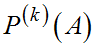 представляет собой массив, состоящий из приближений для вероятностей 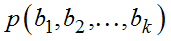 появления k-грамм 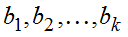 в открытом тексте, 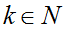, 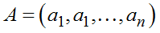 – алфавит открытого текста, N – длина текста.
Тогда источник "открытого текста" генерирует последовательность 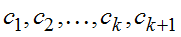 знаков алфавита А, в которой k-грамма 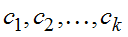 появляется с вероятностью 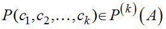, следующая k-грамма появляется с вероятностью 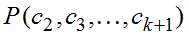 и т. д. Назовем построенную модель открытого текста вероятностной моделью k-го приближения. То есть для модели открытого текста первого порядка все слова рассматриваются как независимые, имеющие определенную вероятность появления.
В вероятностной модели второго приближения первый знак 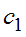 имеет вероятность 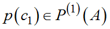, а каждый следующий знак зависит от предыдущего и появляется с вероятностью
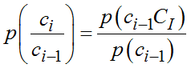,
где p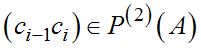, 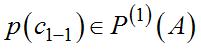.
Применив к расшифрованному тексту одну из моделей, можно построить критерий распознавания открытого текста и, соответственно, критерий правильности угадываемого ключа. При этом можно воспользоваться стандартными методами проверки статистических гипотез.
Классификация криптографических методов защиты информации
Классификация криптографических методов защиты информации представлена на рис. 1.2. Она состоит из трех блоков:
1. Криптографические примитивы – алгоритмы, решающие одну задачу, например, вычисление электронной цифровой подписи (ЭЦП).
2. Методы криптоанализа криптографических примитивов.
3. Криптографические протоколы, показывают, как объединить несколько криптографических примитивов для решения конкретной практической задачи, например, обмена ключами.
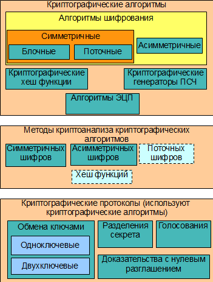
Рис. 1.2. Классификация криптографических методов защиты информации
Рассмотрим краткое описание криптографических примитивов:
1) симметричные алгоритмы шифрования − одноключевые алгоритмы шифрования, для шифрования и расшифрования используется одинаковый ключ;
2) блочные шифры − симметричные алгоритмы обрабатывающие данные блоками фиксированной длины, одинаковые блоки открытого текста преобразуются в одинаковые блоки шифртекста;
3) поточные алгоритмы шифрования − симметричные алгоритмы шифрования обрабатывающие данные побитно или побайтно, в отличие от блочных шифров одинаковые символы открытого текста преобразуются в разные символы шифртекста;
4) асимметричные алгоритмы шифрования − двухключевые алгоритмы шифрования; один ключ служит для зашифрования − открытый, другой для расшифрования − закрытый; применяются при генерации ЭЦП;
5) хэш-функции − односторонние криптографические алгоритмы предназначенные для получения свертки сообщения; используются для генерации ЭЦП, проверки целостности и т. д.
6) криптографические генераторы ПСЧ – алгоритмы генерации ПСЧ, статистически неотличимых от полностью случайного потока данных;
7) алгоритмы ЭЦП − алгоритмы вычисления свертки сообщения, позволяющей подтвердить его авторство и целостность;
8) методы криптоанализа − алгоритмы, позволяющие на основе анализа данных специального вида уменьшить вычислительную сложность расшифрования сообщения по сравнению с методом полного перебора;
9) криптографические протоколы − описание распределенного алгоритма, в процессе выполнения которого два или более участника последовательно выполняют определенные действия и обмениваются сообщениями с использованием криптографических алгоритмов.
Необходимо отметить, что на основе криптографических алгоритмов одного класса могут быть созданы криптографические алгоритмы других классов. Так, например, широко распространено построение поточных шифров и хеш-функций на основе блочных шифров, поточных шифров на основе хеш-функций, генераторов ПСЧ на основе алгоритмов шифрования разных классов и т. д.